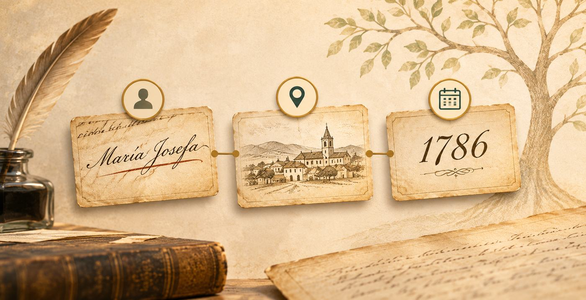

Preservar el conocimiento genealógico
Recuperar, verificar y organizar la historia familiar antes de que se pierdan documentos frágiles, saberes locales y recuerdos vivos.
Investigación genealógica en España · Linajes de ADN · Divulgación
Preservamos el conocimiento genealógico y conectamos linajes familiares documentados con el ADN-Y y el ADNmt, antes de que desaparezcan los documentos, los recuerdos y las oportunidades de realizar pruebas.
MAGENHA es mucho más que un servicio de búsqueda de documentos: cada caso puede contribuir a una comprensión más amplia y fundamentada de familias, lugares, migraciones y linajes.
Por qué existe MAGENHA
Nuestro trabajo integra las pruebas documentales, la genética uniparental y la divulgación para mantener el conocimiento familiar útil, verificable y abierto a futuros estudios.
Recuperar, verificar y organizar la historia familiar antes de que se pierdan documentos frágiles, saberes locales y recuerdos vivos.
Situar los resultados de ADN-Y y ADNmt en su contexto histórico mediante antepasados, fechas, lugares y cadenas de descendencia documentados.
Dar prioridad a líneas paternas y maternas directas cuyos últimos representantes aptos para una prueba podrían desaparecer.
Fomentar el interés por la genealogía, la genética, la arqueología, la historia de las poblaciones y las disciplinas que ayudan a explicar los orígenes humanos.
Investigación genealógica
Investigamos partidas de bautismo, matrimonio y entierro en registros eclesiásticos católicos; reconstruimos líneas familiares y verificamos genealogías previas, especialmente cuando estos registros son de difícil acceso o no están disponibles en internet.
Conozca el servicio de investigaciónCuéntenos a quién o qué espera encontrar y facilítenos la información de la que ya dispone.
La disponibilidad depende de la localidad, el período, el archivo, el tipo de documento y el acceso posible en ese momento.
Acordamos objetivos, fuentes, modalidad y condiciones antes de cualquier pago. El importe de apertura, cuando corresponda, se comunica en privado.
Un documento concreto puede presupuestarse como búsqueda puntual; las investigaciones más amplias se hacen por bloques de horas, desde 40 €/hora como referencia orientativa.
Las fuentes localizadas se analizan, se transcriben cuando procede y se relacionan con la genealogía general.
Dónde investigamos
Investigamos en España a través de nuestra red de colaboradores. La cobertura siempre depende de la localidad, el período, el archivo y el acceso disponible, no simplemente de que un lugar aparezca en un mapa.
Consulte la cobertura actualCobertura actual
Archivos históricos de las diócesis donde trabajan nuestros colaboradores. Consulte su localidad en el buscador de cobertura.

Programa de Investigación de Linajes
Si usted o un familiar idóneo ya dispone de un resultado pertinente de ADN-Y o ADNmt —o lo obtiene por su cuenta—, MAGENHA puede evaluar la correspondiente línea paterna o materna directa.
Cuando el linaje se encuentra dentro de las zonas y los períodos que podemos investigar, el proyecto podrá cubrir hasta el 100 % del trabajo genealógico estándar necesario para documentar esa línea uniparental concreta.
Ayúdenos a seguir divulgando
Su apoyo ayuda a MAGENHA a divulgar genealogía, genética e historia de las poblaciones y a llevar nuevas conversaciones a Rootscast, nuestro podcast. No necesita ser cliente de investigación para participar.
 Episodio destacado · Rootscast 26Antes de 1492: el mundo indígena del CaribeCon Jorge Ulloa Hung · Ver en YouTube
Episodio destacado · Rootscast 26Antes de 1492: el mundo indígena del CaribeCon Jorge Ulloa Hung · Ver en YouTube

Empiece con lo que sabe
Envíenos una breve descripción de su objetivo de investigación. Primero le indicaremos si se ajusta a nuestra cobertura actual.